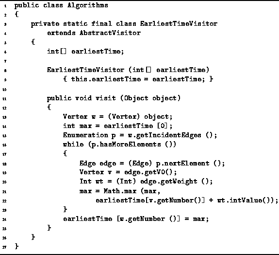
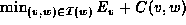
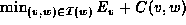
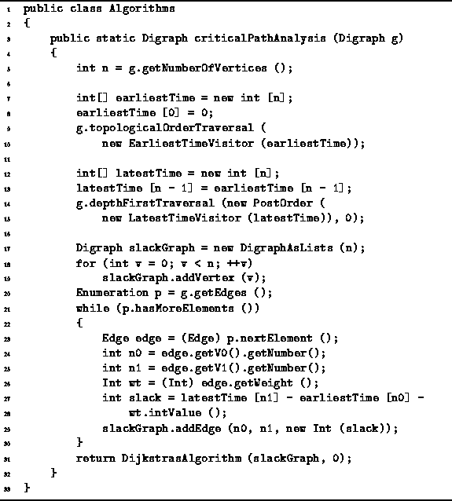
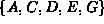
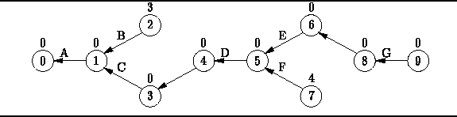

Data Structures and Algorithms
with Object-Oriented Design Patterns in Java
Data Structures and Algorithms
with Object-Oriented Design Patterns in Java
Given an activity-node graph,
the objective of critical path analysis is to determine
the slack time for each activity and
thereby to identify the critical activities and the critical path.
We shall assume that the activity node graph
has already been transformed to an edge-node graph.
The implementation of this transformation
is left as a project for the reader (Project  ).
Therefore, the first step is to compute the earliest and latest event times.
).
Therefore, the first step is to compute the earliest and latest event times.
According to Equation ,
the earliest event time of vertex w
is obtained from the earliest event times of all its predecessors.
Therefore, must compute the earliest event times
in topological order.
To do this, we define the EarliestTimeVisitor
shown in Program .

Program: Critical path analysis--computing earliest event times.
The EarliestTimeVisitor has one field, earliestTime,
which is an array used to record the  values.
The visit method of the EarliestTimeVisitor
class implements directly Equation .
It uses an getIncidentEdges enumeration to determine
all the predecessors of a given node
and computes .
values.
The visit method of the EarliestTimeVisitor
class implements directly Equation .
It uses an getIncidentEdges enumeration to determine
all the predecessors of a given node
and computes .
In order to compute the latest event times,
it is necessary to define also a LatestTimeVisitor.
This visitor must visit the vertices of the event-node graph
in reverse topological order.
Its implementation follows directly from Equation
and Program .
Program defines the method
called criticalPathAnalysis that does what its name implies.
This method takes as its argument a Digraph
that represents an event-node graph.
This implementation assumes that the edge weights are instances of the
Int class defined in Program .

Program: Critical path analysis--finding the critical paths.
The method first uses the EarliestTimeVisitor in a topological order traversal to compute the earliest event times which are recored in the earliestTime array (lines 7-10). Next, the latest event times are computed and recorded in the latestTime array. Notice that this is done using a LatestTimeVisitor in a postorder depth-first traversal (lines 12-15). This is because a postorder depth-first traversal is equivalent to a topological order traversal in reverse!
Once the earliest and latest event times have been found,
we can compute the slack time for each edge.
In the implementation shown,
an edge-weighted graph is constructed that is isomorphic with the
the original event-node graph,
but in which the edge weights are the slack times
as given by Equation (lines 17-30).
By constructing such a graph we can make use of Dijkstra's algorithm
find the shortest path from start to finish
since the shortest path must be the critical path (line 31).
The DijkstrasAlgorithm method given in Section
returns its result in the form of a shortest-path graph.
The shortest-path graph for the activity-node graph of Figure
is shown in Figure .
By following the path in this graph from vertex 9 back to vertex 0,
we find that the critical path is .

Figure: The critical path graph corresponding to Figure .
 Copyright © 1998 by Bruno R. Preiss, P.Eng. All rights reserved.
Copyright © 1998 by Bruno R. Preiss, P.Eng. All rights reserved.